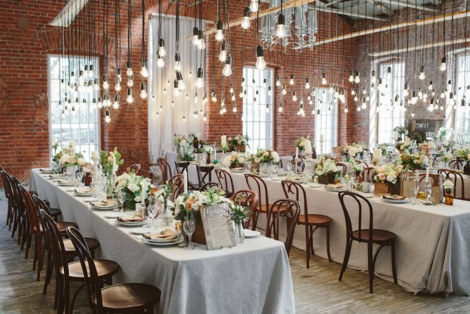

Несмотря на то, что существует великое множество различных вариантов оформления, многие из них схожи, их черты тесно переплетаются между собой и порой бывает трудно чётко отделить границы этих стилей друг от друга.
Тем не менее крайне важно уметь это сделать, поскольку выбранный стиль по обыкновению прослеживается как в деталях, мелочах, так и в более глобальных вещах: начиная от образа жениха и невесты, заканчивая выбором места, декором площадки, где планируется проведение мероприятия, оформлением зоны фуршета, развлечений и даже программой свадебного торжества и его музыкальным сопровождением.
Рассмотрим 8 самых распространённых видов оформлений свадебных церемоний, которые, возможно, смогут
вдохновить вас на
создание той самой, желаемой атмосферы вашего праздника.
1. Классический стиль
Основной особенностью свадьбы в классическом стиле является её традиционность, консервативность: роскошные, элегантные наряды жениха и невесты, красивые, дорогие автомобили, богато украшенный зал, сдержанность и изысканность во всём.
Образ невесты – элегантный «наряд принцессы»: платье в пол белоснежного цвета (или в оттенке айвори, шампанского, жемчуга), пышного или приталенного кроя, сшитое из качественной, дорогой ткани(шёлк, атлас); закрытые туфли на небольшом тонком каблуке. Нежелательно наличие ярких, броских, вычурных элементов в образе.
Образ жениха, безусловно, должен быть выбран в соответствии с нарядом невесты: для данного стиля свадебного торжества наиболее уместен будет классический костюм, фрак или даже смокинг в чёрном, тёмно-синем или сером цвете. Прекрасно завершит образ рубашка в пастельных тонах и классический галстук или бабочка.
Оформление свадьбы в классическом стиле ориентировано на создание изыска, роскоши и сдержанности во всём, ибо классика – это то, что должно быть актуальным всегда, вне зависимости от времени.Акцент на тканевых драпировках зон президиума, фото, фуршетной зоны и флористические композиции из живых цветов нежных оттенков (так же в зоне регистрации брака, в зоне банкета, фуршета и так далее). В декоре также приветствуется использование свадебных монограмм и резных деревянных шкатулок для казны. При этом желательно исключить использование чрезмерно ярких, кричаще-вызывающих, массивных элементов декора.
При оформлении торжества в классическом стиле важно уделить внимание таким деталям, как, например, свадебные пригласительные для гостей. Поскольку приглашение является частью декора свадьбы, оно также должно быть выдержано в классической стилистике мероприятия: для создания подобных открыток обычно используется красивая, плотная бумага светлого цвета с элементами классических узоров, тиснения или окантовкой, вырезанной с помощью лазерного станка. Цветовая гамма свадебного торжества в классическом стиле – нежные, пастельные оттенки.
2. Бохо
Стиль бохо был создан в противовес классике, гламуру и вычурности. Его отличает эстетика лёгкости, эксцентричности, нотки богемности и непосредственности. Здесь вы встретите и красочные детали, обращающие на себя внимание, и необычные, смелые образы, и использование этнических и винтажных элементов.
Наряд «бохо-невесты» предполагает в первую очередь лёгкость и удобство. В противовес громоздкому классическому свадебному платью, невесты в стиле бохо отдают предпочтение свободному, комфортному, не стесняющему движения наряду прямого кроя из лёгкой, струящейся ткани (шифону, кружеву, льну, шёлку). Приветствуется добавление нестандартных, обращающих на себя внимание элементов: вязка или красочные украшения ручной работы, яркие аксессуары (цветочные венки, палантины). Чаще всего невесты останавливают свой выбор на обуви на плоской подошве – балеткам, сандалиям, ботинкам.
При выборе костюма для жениха предпочтение так же отдаётся натуральным тканям; многие отказываются от пиджака и выбирают лёгкий жилет (зачастую отличающийся по цвету от брюк).
Оформление свадьбы в стиле бохо прежде всего предполагает «правильный» выбор места. Едва ли жених и невеста в эксцентричной и непосредственной одежде, напоминающей стиль хиппи, будут гармонично смотреться в пышном банкетном зале. Поэтому для проведения подобного рода мероприятия часто выбирают площадку открытого типа, например, ресторан, утопающий в цветах и зелени, располагающийся где-то на природе.
Декор зоны проведения свадьбы – это полёт фантазии, сочетание несочетаемого: в бохо-стиле нет чёткой цветовой гаммы, поэтому чем ярче и интереснее элементы декора, тем лучше. Здесь вы встретите и разноцветные ковры, и пледы с яркими этническими орнаментами, подушки всех цветов радуги, огромное количество зелени в сочетании с деревом.
Во флористике предпочтение отдаётся асимметричным формам букетов; выбор цветов – это так же сочетание несочетаемого: зелень, полевые цветы нежных оттенков и яркие акценты из броских, экзотических цветов. Отдельные элементы флористических решений могут повторяться и на свадебных приглашениях: для них чаще всего выбирают крафтовую бумагу или дерево с лазерной гравировкой или УФ-печати.
3. Эко-стиль
Одним из более трендовых направлений в оформлении свадебного торжества на сегодняшний день является эко-стиль или рустик. Он предполагает использование натуральных материалов (сено, дерево, лён, мешковина) во всех деталях празднества, что придаёт мероприятию очарование лёгкости и небрежности.
Платье невесты в стиле рустик – светлое, воздушное, лёгкое, струящееся. Образ можно дополнить венком из полевых цветов.
Образ жениха: ни в коем случае не стоит надевать фрак, смокинг или классические туфли. Акцент на природную, деревенскую лёгкость и комфорт: рубашка из натуральной ткани, жилет, летние туфли или мокасины.
Оформление свадьбы в эко-стиле – это в первую очередь использование в декоре различных природных материалов (ими могут быть лён, хлопок, простые полевые цветы, кора деревьев, дерево, сено, возможно использование стекла). При выборе места (так же как и на свадьбе в стиле бохо) предпочтение отдаётся ресторану или загородному дому на природе.
Прекрасным решением на торжестве в эко-стиле будет установка арки или качелей из дерева (для их создания декораторы могут использовать любые «лесные» материалы, например, хвою и брёвна, разбавляя их полевыми цветами нежных оттенков). Флористические композиции можно поместить в деревянные кашпо, маленькие горшочки, баночки или ведёрки.
Отдельное внимание следует уделить таким деталям как свадебные пригласительные и книга пожеланий для молодых: прекрасным решением будет использование дерева при их создании.
4. Винтажный стиль (Шебби-шик)
Данный стиль ориентирован на использование винтажных элементов декора: состаренной мебели и прочих аутентичных вещей, предметов, аксессуаров со своими историями.
Наряд невесты – приталенное платье из кружева или с добавлением его в качестве акцента (на шлейфе, спине, рукавах, перчатках). Возможна открытая спина или декольте. Фата не обязательна: её можно заменить, например, шляпкой с вуалью, заколками с кружевом и стразами.
Костюм жениха – также в бежевых, кремовых оттенках, при этом важно, чтобы образ жениха был с налётом винтажности: можно использовать необычный галстук-бабочку или галстук-шарф.
Цветовая палитра винтажной свадьбы: пудровые, кремовые, бежевые, приглушённые оттенки и отсутствие явных контрастов. Как мы уже упомянули выше, приветствуется добавление кружева в элементы декора, оно будет перекликаться с платьем невесты. Кроме того, кружево можно использовать при создании как пригласительных, так и на прочей полиграфии (меню, план рассадки гостей), сочетая его с лентами и бусинами.
5. Прованс
Образ молодожёнов не должен быть чересчур броским: не стоит забывать, что данный стиль навеян атмосферой французской деревней. Стоит отказаться от всего чрезмерно броского и вычурного, спрятав стразы, пышные платья и корсеты в дальний ящик. Идеальным для невесты будет платье из лёгкой, мягко струящейся ткани прямого кроя. Образ можно дополнить кружевами, нежным ободком, цветами или лентами в волосах и небрежной французской косой. Прекрасным решением будет добавить в наряд сиреневые акценты, чтобы они перекликались с тематикой лавандовой свадьбы.
Продумывая наряд жениха, следует исключить официальность и строгость. Как нельзя кстати будут натуральные ткани светлых оттенков и бутоньерка, рубашка или галстук цвета лаванды.
Оформление свадьбы в стиле прованс необходимо продумать до мелочей, важна каждая, на первый взгляд, казалось бы, маленькая деталь. Сюда входит и меню с традиционными блюдами южного побережья Франции (мягчайшая деревенская выпечка, рататуй, морепродукты, французские вина), и десерты, пестрящие всеми оттенками лавандового, и флористические композиции, составленные на основе вышеупомянутых цветов. Цветки лаванды можно использовать и в пригласительных, и на бутоньерках для подружек невесты. Невероятно красиво эти полевые цветы сочетаются с деревом.
6. Hand-made или craft
Hand-made или craft – одно из самых популярных стилистических решений при организации свадеб в 2020 году. Всё больше и больше молодожёнов отдают предпочтение самодельным аксессуарам на свадьбе, поскольку это позволяет как существенно сэкономить бюджет, так и предоставляет полёт творчеству, фантазии; кроме того, есть определённое очарование и трогательность в том, что те или иные элементы декора были сделаны своими руками и с огромной любовью.
Образ невесты и жениха на hand-made свадьбе – это одежда, которая была сшита персонально для вас, исходя из ваших пожеланий/эскизов. Прекрасно, если кто-то из молодожёнов сумеет сшить их самостоятельно. Выбранные наряды можно дополнить аксессуарами, изготовленными своими руками: букет или заколку в волосы для невесты можно сделать самостоятельно по видео-урокам на youtube.
При декорировании мероприятия в данном стиле используется всё, что может создать настроение. Это и приглашения, выполненные из крафтовой бумаги, и вязаные бутоньерки, самодельные фоторамки, к которым в ходе празднования крепятся моментальные фотографии, сделанные гостями на полароид; и подсвечники и бокалы, расписанные вручную – вариантов множество. К подготовке к мероприятию можно привлечь подружек невесты, друзей и родственников, предварительно закупившись в магазине для рукоделия.
7. Гламур
Стиль, роскошь, дорогая еда и напитки, роскошные автомобили, безупречно одетые гости – это всё про стиль «гламур», который всё ещё остаётся популярным в организации свадебного мероприятия. Данный стиль достаточно трудно реализовать, поскольку существует очень тонкая грань между роскошью и богатством и вульгарностью и китчем, поэтому всё должно быть продумано от и до.
Одежда молодожёнов – это то, чему следует уделить особое внимание. Исключены дешёвые и некачественные материалы, так как акцент в первую очередь не на фасоне/длине/цвете наряда, а на качестве его исполнения.
Платье невесты в стиле гламур предполагает произведение огромного впечатления на окружающих и должно вызывать восторг и, возможно, даже зависть. Обычно невесты, выбравшие главенствующим стилем свадьбы именно гламур, отдают предпочтение стильный, запоминающийся силуэт, чтобы оно походило на одеяние знаменитости на ковровой дорожке. Отдельного внимания заслуживает выбор аксессуаров: в данном стиле нет места украшениям, выглядящим дёшево и безвкусно, образ должен быть безупречен. Образ жениха – элегантный, утончённый костюм с идеальным силуэтом и посадкой.
Цветовая палитра торжества в стиле гламур предполагает разнообразие: это может быть как классическое сочетание серебра или золота с кипельно-белым цветом, так и благородный синий или даже чёрный цвет как броский акцент на вашей свадьбе.
Большое количество гирлянд, свечей в роскошных канделябрах, блёсток, атласных или кружевных драпировок – всё это имеет место на гламурной свадьбе, главное понимать, что если вы хотите, чтобы ваше торжество в данном стиле выглядело стильно и изысканно, сэкономить будет трудно.
8. Лофт
Современный и очень трендовый стиль лофт характеризуется обилием, во-первых, открытого пространства и, во-вторых, наличием в декоре урбанистических индустриальных элементов, таких как кирпичные стены без отделки, открытые трубы, высокие потолки, цементный пол и так далее. Это сочетание контрастных деталей: камня и стекла, стали и дерева, спокойных, нейтральных, монохромных оттенков с тёмными, яркими и насыщенными, промышленных элементов с нежными цветочными композициями. Свадьба в данном стиле прекрасно подойдёт тем, кто стремится выделиться и сделать своё торжество непохожим ни на чьё другое.
Образ жениха и невесты на такой свадьбе обычно отличается некоторой богемностью и лёгкостью: сюда не подойдут пышные кринолинные платья с корсетом. Для невесты будет идеальным простое, лаконичное платье прямого силуэта, не обязательно светлое. Наряд жениха можно дополнить, например, ярким пиджаком из бархата.
Оформление свадьбы в стиле лофт требует единого, схожего дизайна во всех элементах декора. Общими требованиями к оформлению будут: приглушённые цвета, лаконичность, минимализм, простота. Эти черты должны прослеживаться и в пригласительных, и в плане рассадки гостей, и в оформлении самого лофта и фуршетной зоны. Ещё одной отличительной чертой свадьбы в индустриальном стиле является обилие осветительных приборов (гирлянд, люстр, торшеров, свечей) и цветочных композиций, разбавляющих и оживляющих урбанистический интерьер с налётом небрежности и минимализма.
Надеемся, что вам понравилась наша подборка стилей для свадьбы. Какой бы стиль вы ни выбрали, ваше торжество будет уникальным вместе со нами!